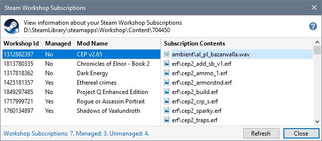
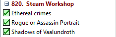
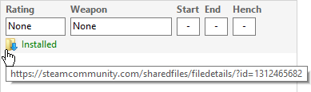
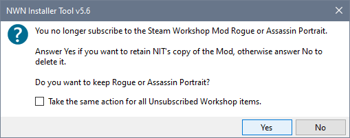
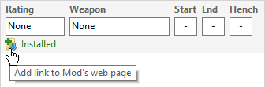

Select Steam Workshop Subscriptions from the View Menu to see subscription information.

The Installer Tool only manages Subscription Mods that are not defined in your Profile. In the illustration above, CEP is not managed because it was already downloaded from another source.
You can delete the Tool's version of CEP to use the Workshop copy, unsubscribe the Workshop CEP to save space or leave both versions intact.
Initially all Mods created from Steam's Workshop Items are defined as members of the 820. Steam Workshop Group.

You can perform the same operations on Workshop Mods as you can on any other Mod in Profile list. However, if you Delete a Workshop Mod, the Installer Tool will re-create it the next time you start the Tool.
You can Import Workshop Mods into Profiles defined for Neverwinter Nights 1.69.
You can click the Web Link in the Mods Properties panel to view the Steam Workshop's mod page.

After using Steam to unsubscribe a managed Mod, select Refresh Workshop Files from the Tools Menu or click the Steam Workshop Subscriptions viewer's Refresh button.
The Installer Tool detects the subscriptions that are no longer active and gives you the opportunity to delete or retain the Mod.

The Web Link is removed from the Mods you retain.

Enable Steam Workshop Subscription Management
Detect Steam Workshop Subscriptions
Manage Workshop Mods
Disable Steam Workshop Subscription Management